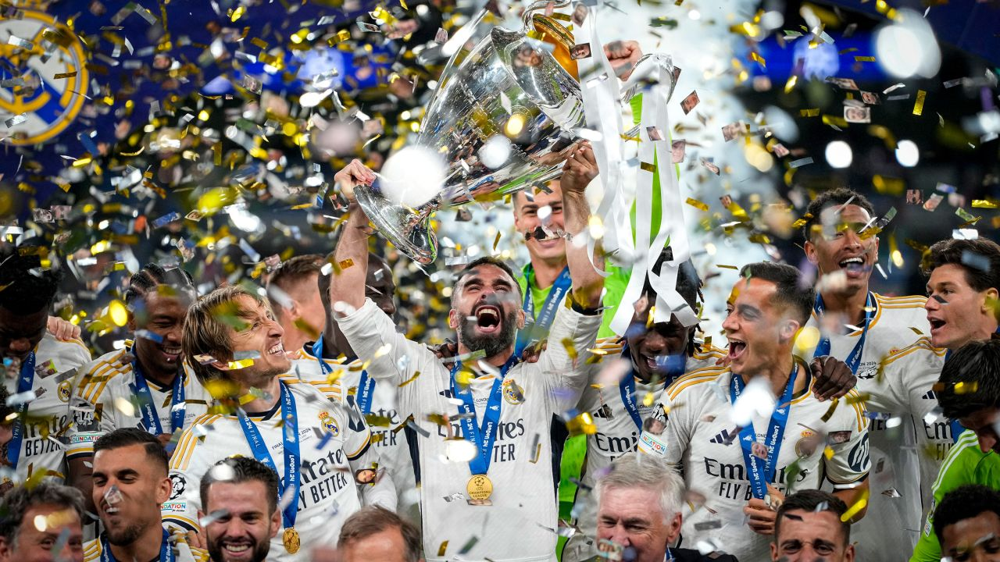

O Real Madrid é considerado o clube mais vitorioso da história da UEFA Champions League, a principal competição de clubes do futebol europeu. Fundado em 1902, na cidade de Madrid, na Espanha, o clube construiu uma trajetória marcada por conquistas, grandes jogadores e momentos históricos que o transformaram em uma das equipes mais famosas do mundo.
Desde a criação da competição, então chamada Taça dos Clubes Campeões Europeus, o Real Madrid demonstrou sua força ao conquistar as cinco primeiras edições do torneio, entre 1956 e 1960. Esse feito ajudou a consolidar a imagem do clube como uma potência do futebol internacional e marcou o início de uma longa tradição de sucesso.
Ao longo das décadas, o Real Madrid continuou acumulando títulos continentais e revelou ou contratou alguns dos maiores jogadores da história do esporte. Nomes como Alfredo Di Stéfano, Ferenc Puskás, Raúl, Zinedine Zidane, Cristiano Ronaldo, Sergio Ramos e Luka Modrić fizeram parte de campanhas memoráveis que ficaram marcadas na memória dos torcedores.
Um dos períodos mais impressionantes da história do clube aconteceu entre 2016 e 2018, quando o Real Madrid conquistou três títulos consecutivos da Champions League sob o comando do técnico Zinedine Zidane. Esse feito foi considerado extraordinário devido ao alto nível de competitividade do futebol europeu moderno.
Além dos títulos, o Real Madrid é reconhecido por sua enorme torcida, sua tradição vencedora e sua capacidade de decidir partidas importantes. O estádio Santiago Bernabéu, casa do clube, é um dos mais famosos do mundo e já foi palco de inúmeras noites históricas do futebol.
Graças à sua história, aos seus recordes e à sua tradição de vitórias, o Real Madrid é frequentemente apontado como o maior clube de futebol do mundo. Sua presença na Champions League sempre desperta expectativas, e a equipe continua sendo uma referência de excelência e sucesso no cenário esportivo internacional.